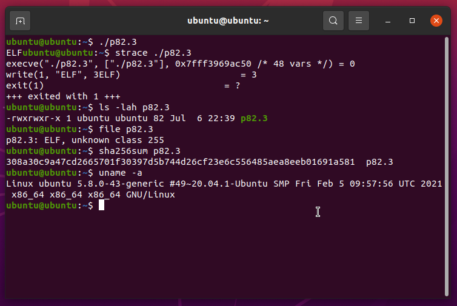

┌───────────────────────┐
▄▄▄▄▄ ▄▄▄▄▄ ▄▄▄▄▄ │
│ █ █ █ █ █ █ │
│ █ █ █ █ █▀▀▀▀ │
│ █ █ █ █ ▄ │
│ ▄▄▄▄▄ │
│ █ █ │
│ █ █ │
│ █▄▄▄█ │
│ ▄ ▄ │
│ █ █ │
│ █ █ │
│ █▄▄▄█ │
│ ▄▄▄▄▄ │
│ █ │
Elf Binary Mangling Pt. 4: Limit Break │ █ │
~ netspooky └───────────────────█ ──┘
CONTENTS
0. Introduction
1. Background
2. Read No Longer Implies Exec
3. Exploring Other Overlays
3.1 The 0x38 Overlay
3.2 The 0x31 Overlay
4. Tracing the ELF Loader
5. Limited Addition
6. There's Levels To This Chip
7. write() Or Die
8. ./xit
[ 0. Introduction ]────────────────────────────────────────────────────────────────────────────//───
It's been about three years since I started playing with tiny executable files and released the
first part of the ELF Binary Mangling series.
In part 2, we established a limit of 84 bytes for 64 bit ELFs. This was achieved by starting the
program header at offset 0x1C within the ELF header, and carefully crafting each field to make it
work within the required values.
Sometime in the summer of 2020, the ELF Binary Golf world was rocked by a change in the kernel's
ELF loader that would render this trick useless.
This writeup is a deep dive into what caused the 84 byte ELF to stop working, how the kernel parses
ELFs, what truly matters in the ELF and Program headers, and a working 64 bit ELF that is even
smaller than the previous record.
[ 1. Background ]──────────────────────────────────────────────────────────────────────────────//───
Unlike PEs on Windows, ELF files don't have a hard limit on how small they can be. This has allowed
for people to create impossibly small ELFs that can be loaded and executed, as long as they follow
the spec [1].
In EBM Part 2 [2], a program header overlay was introduced that started the program header table at
0x1C in the file. This set the p_flags field to 0x1C, because it overlapped with the e_phoff field
in the ELF header. When I wrote this, I only had a limited amount of experience with kernel code.
Reading through the loader's logic, I had mistakenly thought that the flags in p_flags (in practice)
were mapped to the kernel memory manager's own protection flags [3], which look like this:
#define PROT_READ 0x1 /* page can be read */
#define PROT_WRITE 0x2 /* page can be written */
#define PROT_EXEC 0x4 /* page can be executed */
Following this logic, 0x1C would have the PROT_EXEC flag set:
PROT_READ 1 00000001 Read
PROT_WRITE 2 00000010 Write
PROT_EXEC 4 00000100 Execute
p_flags 1Ch 00011100
└── PROT_EXEC is set
I honestly didn't think much of it. I was just happy that it executed and chalked up the rest to
kernel unknowns. Narrator: _This was not the case._
┌ SIDE NOTE: What even is a program header? ───────────────────────────────────────────────┐
│ │
│ A program header is a structure that describes a segment, or other info, that the system │
│ needs to prepare the program for execution. An ELF needs at least one PT_LOAD segment to │
│ be loaded into memory and executed. │
│ │
└──────────────────────────────────────────────────────────────────────────────────────────┘
REFS:
├─[1] https://refspecs.linuxfoundation.org/elf/elf.pdf
├─[2] https://n0.lol/ebm/2.html
└─[3] https://elixir.bootlin.com/linux/latest/source/include/uapi/asm-generic/mman-common.h#L12
[ 2. Read No Longer Implies Exec ]─────────────────────────────────────────────────────────────//───
Behind the scenes, the segment permissions set by the program headers DO rely on the permissions
flags [1] defined by the ELF spec. Here, the bit flags for READ and WRITE are swapped from the
kernel mmap flags:
PF_X 1 00000001 Execute
PF_W 2 00000010 Write
PF_R 4 00000100 Read
p_flags 1Ch 00011100
└── PF_R is set
In the 0x1C overlay ELFs, the only p_flags set was PF_R, which maps the segment as read only. This
worked because of a backward compatibility feature in the loader for older x86_64 processors.
On x86, for each new process, a personality [2] flag was set by default called READ_IMPLIES_EXEC.
This flag essentially asserts that when a memory allocation is made with the PROT_READ flag, it
means that the mmap'd memory is also marked PROT_EXEC, giving read AND execute permissions to the
memory area.
The flag was set because of a header type known as PT_GNU_STACK which determines whether or not the
stack is executable. When this header was missing, it defaulted to setting READ_IMPLIES_EXEC, to
support platforms that don't or can't have an NX bit [3]. This is a "fail-open" scenario that makes
sure code will run as intended.
So when there was no PT_GNU_STACK header (due to us only having one program header), our read flag
failed open, allowing the program's memory page to be mapped with RX permissions by the kernel. This
is what enabled the overlay to work, and the binaries executed just fine.
On April 20, 2020, a Linux kernel commit was made that would end this trick:
x86/elf: Disable automatic READ_IMPLIES_EXEC on 64-bit [4]
This made the lack of a PT_GNU_STACK header in a 64 bit ELF turn off the READ_IMPLIES_EXEC [5] flag.
The change turned "exec-all" into "exec-none" (fail closed).
(Big shoutout to @lichtman_ben for locating this commit!)
So what happens when you run a 0x1C ELF now? This is what the EBM2 binary looks like when executed:
$ strace ./xit
execve("./xit", ["./xit"], 0x7ffdfd471e80 /* 47 vars */) = 0
--- SIGSEGV {si_signo=SIGSEGV, si_code=SEGV_ACCERR, si_addr=0x100000004} ---
+++ killed by SIGSEGV (core dumped) +++
Segmentation fault (core dumped)
If you run dmesg, you can see these errors as well:
[22056.363534] xit[31789]: segfault at 100000004 ip 0000000100000004 sp 00007ffc8ad06dd0
error 15 in xit[100000000+1000]
[22056.363584] Code: Unable to access opcode bytes at RIP 0xffffffda.
error 15 [6] tells us exactly what we need to know: Something tried to execute from a mapped memory
area that isn't executable.
Since we know that the PF_X flag wasn't set, and that READ no longer implies EXEC, this points us to
the core of the issue.
We can also confirm the mapping issue by viewing the memory permissions of the loaded process.
Here's what it looks like when it works, and READ_IMPLIES_EXEC is set:
$ rizin -b 64 -d xit
...
[0x100000004]> dm
0x0000000100000000 - 0x0000000100001000 * usr 4K s r-x /tmp/xit /tmp/xit ; map.tmp_xit.r_x
0x00007fff8793e000 - 0x00007fff8795f000 - usr 132K s rwx [stack] [stack] ; map.stack_.rwx
0x00007fff879b0000 - 0x00007fff879b3000 - usr 12K s r-- [vvar] [vvar] ; map.vvar_.r
0x00007fff879b3000 - 0x00007fff879b5000 - usr 8K s r-x [vdso] [vdso] ; map.vdso_.r_x
0xffffffffff600000 - 0xffffffffff601000 - usr 4K s r-x [vsyscall] [vsyscall] ; map.vsyscall_.r_x
This is what it looks like now, on a kernel that contains this patch:
$ rizin -b 64 -d xit
...
[0x100000004]> dm
0x0000000100000000 - 0x0000000100001000 * usr 4K s r-- /tmp/xit /tmp/xit ; map.tmp_xit.r
0x00007fffb88cd000 - 0x00007fffb88ee000 - usr 132K s rw- [stack] [stack] ; map.stack_.rw
0x00007fffb896e000 - 0x00007fffb8972000 - usr 16K s r-- [vvar] [vvar] ; map.vvar_.r
0x00007fffb8972000 - 0x00007fffb8974000 - usr 8K s r-x [vdso] [vdso] ; map.vdso_.r_x
0xffffffffff600000 - 0xffffffffff601000 - usr 4K s --x [vsyscall] [vsyscall] ; map.vsyscall_.__x
Notice the top line, the r-x (Read, Execute) permission changes to r-- (Read). Also, the stack has
rwx (Read, Write, Execute) permissions, and is changed to rw- (Read, Write) due to the patch.
Fun Fact: When no flags are set (such as p_flags = 0x8), you get `error 14: attempt to execute code
from an unmapped area`.
[12571.119831] tester[21040]: segfault at 50000001078 ip 0000050000001078 sp 00007ffff2d7fdc0
error 14 in tester[50000001000+1000]
[12571.119848] Code: Unable to access opcode bytes at RIP 0x5000000104e.
Additionally, other errors can be triggered that don't even give the "Unable to access opcode bytes"
error, and just dump the program header starting at p_offset's 6th byte.
[12490.529762] tester[20913]: segfault at 50000001078 ip 0000050000001078 sp 00007ffdf405a300
error 15 in tester[50000001000+1000]
[12490.529776] Code: 00 00 00 10 00 00 00 05 00 00 00 00 00 40 00 38 00 01 00 01 00 00 00 00 00
00 00 01 00 00 00 00 00 00 00 01 00 00 00 00 00 00 <b0> 3c 66 bf 06 00 0f 05 00
00 00 00 00 00 00 00 00 00 00 00 00 00
Unrelated, but you can also cause a SIGBUS by making p_offset larger than the file itself [7].
REFS:
├─[1] https://elixir.bootlin.com/linux/latest/source/include/uapi/linux/elf.h#L239
├─[2] https://man7.org/linux/man-pages/man2/personality.2.html
├─[3] https://en.wikipedia.org/wiki/NX_bit
├─[4] https://git.kernel.org/pub/scm/linux/kernel/git/torvalds/linux.git/commit/
│ ?id=9fccc5c0c99f238aa1b0460fccbdb30a887e7036
├─[5] https://git.kernel.org/pub/scm/linux/kernel/git/torvalds/linux.git/tree/
│ arch/x86/include/asm/elf.h#n280
├─[6] https://utcc.utoronto.ca/~cks/space/blog/linux/KernelSegfaultErrorCodes
└─[7] https://twitter.com/netspooky/status/1409686118962909188
[ 3. Exploring Other Overlays ]────────────────────────────────────────────────────────────────//───
When I started testing new overlays, I began with test.asm [1]. This is a vanilla tiny ELF that is
128 bytes. There is no overlay, and the header size is 120. This is followed by 8 bytes of code that
calls exit(6).
I experimented with placing data in different locations, and wrote a small fuzzer to increment bytes
and then attempt to execute it and read the return value. This process was painfully slow, and it
didn't actually give me much useful information.
In discussions with others, we'd talked about z3 solvers and other methods to determine what fields
and specific bytes actually mattered. This too would prove to be more difficult and have a lot of
edge cases to account for, so it made more sense to try to find the maximum value for each field by
hand.
The wonderful thing about nasm and using the raw binary output option, is that you can control every
byte. There are also macros and other useful functionality that make things easier to test, rather
that calculating every address and offset by hand.
I started out slow, and put 0xFF bytes wherever I could. Some overwritable fields were already known
from previous research, so the rest was simply trying to fill in the gaps. The following code is the
result of this process.
;-- 0xFFtactics.asm ------------------------------------------------------------
; build:
; $ nasm -f bin 0xFFtactics.asm -o 0xFFtactics
BITS 64
org 0x4FFFFFFFF000 ; Base Address
;-----------------------------+------+-------------+----------+-----------------
; ELF Header struct | OFFS | ELFHDR | PHDR | ASSEMBLY OUTPUT
;-----------------------------+------+-------------+----------+-----------------
db 0x7F, "ELF" ; 0x00 | e_ident | A
db 0xFE ; 0x04 | ei_class | B
db 0xFF ; 0x05 | ei_data | C
db 0xFF ; 0x06 | ei_version | D
db 0xFF ; 0x07 | | E
dq 0xFFFFFFFFFFFFFFFF ; 0x08 | e_padding | F
dw 0x02 ; 0x10 | e_type | G
dw 0x3e ; 0x12 | e_machine | H
dd 0xFFFFFFFF ; 0x14 | e_version | I
dq 0x4FFFFFFFF078 ; 0x18 | e_entry | J
dq phdr - $$ ; 0x20 | e_phoff | K
dq 0xFFFFFFFFFFFFFFFF ; 0x28 | e_shoff | L
dd 0xFFFFFFFF ; 0x30 | e_flags | M
dw 0xFFFF ; 0x34 | e_ehsize | N
dw 0x38 ; 0x36 | e_phentsize | O
dw 1 ; 0x38 | e_phnum | P
dw 0xFFFF ; 0x3A | e_shentsize | Q
dw 0xFFFF ; 0x3C | e_shnum | R
dw 0xFFFF ; 0x3E | e_shstrndx | S
;-----------------------------+------+-------------+----------+-----------------
; Program Header Begin | OFFS | ELFHDR | PHDR | ASSEMBLY OUTPUT
;-----------------------------+------+-------------+----------+-----------------
phdr: dd 1 ; 0x40 | PA | p_type |
dd 0xFFFFFFFF ; 0x44 | PB | p_flags |
dq 0 ; 0x48 | PC | p_offset |
dq $$ ; 0x50 | PD | p_vaddr |
dq 0xFFFFFFFFFFFFFFFF ; 0x58 | PE | p_paddr |
dq 0x7FFFFFF00 ; 0x60 | PF | p_filesz |
dq 0x7FFFFFF00 ; 0x68 | PG | p_memsz |
dq 0xFFFFFFFFFFFFFFFE ; 0x70 | PH | p_align |
_start: mov al,0x3c ; exit syscall | b0 3c
mov di, 6 ; return value 6 | 66 bf 06 00
syscall ; call the kernel | 0f 05
;-- END ------------------------------------------------------------------------
Using this, I constructed a table that details each ELF header field [2] that it would be possible
to overwrite and still allow the ELF to execute properly.
──────────────┬──────┬────┬─────┬───────────────────────────────────────────────
Name │ OFFS │ SZ │ OW? │ Note
──────────────┼──────┼────┼─────┼───────────────────────────────────────────────
EI_MAG0 │ 0x00 │ 1 │ NO │ '\\x7F', Part of the magic value.
EI_MAG1 │ 0x01 │ 1 │ NO │ 'E', Part of the magic value.
EI_MAG2 │ 0x02 │ 1 │ NO │ 'L', Part of the magic value.
EI_MAG3 │ 0x03 │ 1 │ NO │ 'F', Part of the magic value.
EI_CLASS │ 0x04 │ 1 │ YES │ Values 1 (32 Bit) and 2 (64 Bit) are valid
EI_DATA │ 0x05 │ 1 │ YES │ Values 1 (LSB) and 2 (MSB) are expected
EI_VERSION │ 0x06 │ 1 │ YES │ Only "1" is defined, not checked
EI_OSABI │ 0x07 │ 1 │ YES │ This might actually be deprecated?
EI_ABIVERSION │ 0x08 │ 1 │ YES │ This might actually be deprecated?
EI_PAD │ 0x09 │ 7 │ YES │ Free real estate ;)
E_TYPE │ 0x10 │ 2 │ NO │ The type of object file, ET_EXEC, ET_DYN etc.
E_MACHINE │ 0x12 │ 2 │ NO │ This is the CPU arch
E_VERSION │ 0x14 │ 4 │ YES │ Not checked, version 1 is the only version
E_ENTRY │ 0x18 │ 8 │ NO │ Entrypoint
E_PHOFF │ 0x20 │ 8 │ NO │ Program header offset.
E_SHOFF │ 0x28 │ 8 │ YES │ Only if no section headers are defined
E_FLAGS │ 0x30 │ 4 │ YES │ Processor specific flags
E_EHSIZE │ 0x34 │ 2 │ YES │ ELF Header Size. Can be 0
E_PHENTSIZE │ 0x36 │ 2 │ NO │ Size of a program header, actually matters
E_PHNUM │ 0x38 │ 2 │ NO │ Number of program headers
E_SHENTSIZE │ 0x3A │ 2 │ YES │ Section Header size
E_SHNUM │ 0x3C │ 2 │ YES │ Number of section headers
E_SHSTRNDX │ 0x3E │ 2 │ YES │ This sections string table index number
──────────────┴──────┴────┴─────┴───────────────────────────────────────────────
Visual representation of what can be overwritten in the ELF Header, indicated by _:
00000000: 7f45 4c46 ____ ____ ____ ____ ____ ____ .ELF............
00000010: 0300 3e00 ____ ____ 5058 0000 0000 0000 ..>.....PX......
00000020: 4000 0000 0000 0000 ____ ____ ____ ____ @...............
00000030: ____ ____ ____ 3800 0100 ____ ____ ____ ....@.8...@.....
Out of the 64 bytes in the ELF header, 36 of them can be used for whatever. You can also do some fun
tricks with the known offsets in the header, like use e_entry to store some code and a short jump,
or use \x7F\x45 to do a `jg 0x47`, or use EI_MAG* as a constant at 0x0 in the process memory :)
Now we can do the same thing with the program header too:
─────────┬──────┬────┬─────┬───────────────────────────────────────────────
Name │ OFFS │ SZ │ OW? │ Note
─────────┼──────┼────┼─────┼───────────────────────────────────────────────
P_TYPE │ 0x00 │ 4 │ NO │ The first one needs to be 1, SIGSEGV otherwise
P_FLAGS │ 0x04 │ 4 │ PRT │ Only the bottom byte is needed
P_OFFSET │ 0x08 │ 8 │ NO │ Pretty much must be 0 for the first PT_LOAD
P_VADDR │ 0x10 │ 8 │ NO │ This is required
P_PADDR │ 0x18 │ 8 │ YES │ This seems to be largely ignored, but will need more testing
P_FILESZ │ 0x20 │ 8 │ PRT │ As long as p_memsz > p_filesz > actual file size, it's okay
P_MEMSZ │ 0x28 │ 8 │ PRT │ As long as p_memsz > p_filesz > actual file size, it's okay
P_ALIGN │ 0x30 │ 8 │ PRT │ Must be a power of 2
─────────┴──────┴────┴─────┴───────────────────────────────────────────────
Visual representation of what can be overwritten in the Program Header, indicated by _:
00000040: 0100 0000 !!__ ____ 0000 0000 0000 0000 ................
00000050: 00_0 ____ __!_ 0000 ____ ____ ____ ____ ..@.......@.....
00000060: !!__ ____ 0!00 0000 !!__ ____ 0!00 0000 ................
00000070: _!__ ____ ____ ____ ........
This one is a little more complicated. All of the !'s represent a nibble (4 bits) that has it's own
limitations. This is due to some hard limits set elsewhere in the kernel (more on that later), that
you have to abide by to make your binary work. All told, there is roughly 32 out of 56 bytes in this
header that can be used.
Compare to the program headers of demo to see _some_ of the limits of this header.
00000040: 0100 0000 ffff ffff 0000 0000 0000 0000 ................
00000050: 00f0 ffff ff4f 0000 ffff ffff ffff ffff .....O..........
00000060: 00ff ffff 0700 0000 00ff ffff 0700 0000 ................
00000070: feff ffff ffff ffff ........
An interesting side effect of this, even if you aren't golfing, is that it can really mess up a lot
of parsers, including pretty much all of the binutils.
$ readelf -a 0xFFtactics
ELF Header:
Magic: 7f 45 4c 46 fe ff ff ff ff ff ff ff ff ff ff ff
Class: <unknown: fe>
Data: <unknown: ff>
Version: 255 <unknown>
OS/ABI: <unknown: ff>
ABI Version: 255
Type: EXEC (Executable file)
Machine: Advanced Micro Devices X86-64
Version: 0xffffffff
Entry point address: 0xfffff078
Start of program headers: 20479 (bytes into file)
Start of section headers: 64 (bytes into file)
Flags: 0x0
Size of this header: 65535 (bytes)
Size of program headers: 65535 (bytes)
Number of program headers: 65535
Size of section headers: 65535 (bytes)
Number of section headers: 65535
Section header string table index: 65535 <corrupt: out of range>
readelf: Warning: The e_shentsize field in the ELF header is larger than the size of an ELF
section header
readelf: Error: Reading 4294836225 bytes extends past end of file for section headers
readelf: Error: Section headers are not available!
readelf: Error: Too many program headers - 0xffff - the file is not that big
There is no dynamic section in this file.
readelf: Error: Too many program headers - 0xffff - the file is not that big
For more info on generating ELFs with data stored in the headers like this, check out the paper
@TheXcellerator did in tmp.0ut:1 - Dead Bytes [3] and the libgolf library [4].
Now we should get into some of the overlays that are possible.
REFS:
├─[1] https://n0.lol/ebm/test.asm
├─[2] https://refspecs.linuxfoundation.org/elf/gabi4+/ch4.eheader.html
├─[3] https://tmpout.sh/1/1.html
└─[4] https://www.github.com/xcellerator/libgolf
[ 3.1 The 0x38 Overlay ]───────────────────────────────────────────────────────────────────────//───
In the previous part of this section, we determined that P_TYPE has to be 1, E_PHNUM must contain
the correct number of Program Headers, and the fields after can be overwritten. This allows for a
program header overlay at 0x38, shrinking the combined header size from 120 to 112.
In @subvisor's write up about this trick [1], e_ehsize was set to 0x38 to reflect the total size of
the ELF header. The fuzzing attempting before showed that this can actually be any number, because
the ELF loader assumes that you're following the spec. Check out their post for more info about this
and other fun things!
REFS:
└─[1] https://ftp.lol/posts/small-elf.html
[ 3.2 The 0x31 Overlay ]───────────────────────────────────────────────────────────────────────//───
This was first publicly demonstrated by Twitter user @f1ac5, who posted a binary [1] that printed
their handle. It came to my attention after subvisor had posted some of their own ELF experiments.
The code is clever, and it does it's overlay in an interesting way.
This is the layout, with the program header fields highlighted:
$ xxd f1ac5.bin
00000000: 7f45 4c46 0a6a 016a 065a 5889 c7eb 1900 .ELF.j.j.ZX.....
00000010: 0200 3e00 0f05 eb49 0500 0100 0000 0000 ..>....I........
00000020: 3100 0000 0000 0000 be49 0001 00eb e500 1........I......
p_type p_flags p_offs
┌────────┐┌────────┐┌────────────────
00000030: 0001 0000 0005 3800 0100 0000 0000 0000 ......8.........
p_vaddr p_paddr
─┐┌──────────────────┐┌────────────────
00000040: 0000 0001 0000 0000 0066 6c61 6373 0a00 .........flacs..
p_filesz p_memsz
─┐┌──────────────────┐┌────────────────
00000050: 0068 0000 0000 0000 0068 0000 0000 0000 .h.......h......
p_align
─┐┌──────────────────┐
00000060: 006a 3c58 89df 0f05 0000 .j<X......
Base64 Version
f0VMRgpqAWoGWliJx+sZAAIAPgAPBetJBQABAAAAAAAxAAAAAAAAAL5JAAEA6+UAAAEAAAAFOAAB
AAAAAAAAAAAAAAEAAAAAAGZsYWNzCgAAaAAAAAAAAABoAAAAAAAAAGo8WInfDwUAAA==
There's actually a good amount of code in here too. Note that the virtual address is set to 0x10000.
0x10005: 6a01 push 0x1
0x10007: 6a06 push 0x6
0x10009: 5a pop rdx ; buffer length
0x1000A: 58 pop rax ; write syscall
0x1000B: 89c7 mov edi,eax
┌0x1000D: eb19 jmp 0x10028
│...
┌│0x10014: 0f05 syscall
┌││0x10016: eb49 jmp 0x10061
│││...
││└0x10028: be49000100 mov esi, 0x10049 ; The buffer
│└─0x1002D: ebe5 jmp 0x10014
│ ...
└──0x10061: 6a3c push 0x3c
0x10063: 58 pop rax
0x10064: 89df mov edi,ebx
0x10066: 0f05 syscall
This was thought to be the smallest overlay that could be done, now that 0x1C didn't work, and there
were few viable locations for another.
After seeing this, the hunt was on to find something even smaller. During this process, there were
some interesting failures (some for future writeups). To understand them, we need to look deeper
into the kernel, to understand how ELF files are turned into processes that execute what we want.
REFS:
└─[1] https://twitter.com/f1ac5/status/1241925791514071040
[ 4. Tracing the ELF Loader ]──────────────────────────────────────────────────────────────────//───
There's a lot of really good writeups about how the ELF loader (and processes in general) work that
are far beyond the scope of this article. If you want to really understand this on an atomic scale,
I'd recommend reading them, and following along with kernel source.
LWN How programs get run: ELF binaries
https://lwn.net/Articles/631631/
Linux Insides - Chapter 4.4 - How does the Linux kernel run a program
https://0xax.gitbooks.io/linux-insides/content/SysCall/linux-syscall-4.html
The Linux Programming Interface - Chapter 24 - Process Creation
https://nostarch.com/tlpi
The main thing we'll be focusing on to understand why different overlays don't work is binfmt_elf.c,
which contains much of the code used to parse ELF files and assist in setting up processes. It does
a number of checks to see if the file is valid, and then does various tasks such as mapping memory,
and locating the interpreter for the program if one is required.
Tracing the functions called by `load_elf_binary` can show us (almost) exactly what is happening on
a kernel level as our binaries are loaded. To track that our syscalls are called correctly, we use
strace. But syscalls are implemented by the kernel, so what do you use if you need to track those?
The answer: ftrace!
The ftrace tool [1] is a framework of utilities used to track what happens during each process from
the kernel's perspective. There's a lot of documentation, utilities, and frontends for it, which I
encourage you to play around with. The way I used it here was relatively simple, and there are much
more interesting things you can do!
When you run ftrace and record a process, there's a lot of output that is generated. There's so many
functions that can be hard to contextualize, and a lot of redundant things that make it confusing.
The approach I took was to use my known good ELF from earlier, test.bin, and use that as a baseline
to compare other binaries to. Because of how complex nearly every other ELF is in terms of how it is
loaded and parsed, working with a simple binary makes things a lot less confusing.
I used trace-cmd to record all of the function calls of the working binary, and then all of the ones
I had been working on too. I piped each report into text files so I could read later.
$ trace-cmd record -p function -F ./test.bin
$ trace-cmd report > report.test.txt
NOTE: The output from this is very W I D E, so I'm truncating a bunch of the spaces when I need to.
The first thing I did was grep for the load_elf_binary function to make sure that it actually was
called, which was present in all my tests.
$ grep -n load_elf_binary report.*
report.test.txt:1103: test-30856 [001] 21296.075952: function: load_elf_binary
report.x19.txt:803: x19-31112 [001] 21511.641779: function: load_elf_binary
report.x1A.txt:807: x1A-31697 [000] 21990.537442: function: load_elf_binary
report.x1B.txt:802: x1B-31738 [003] 22014.264920: function: load_elf_binary
report.xit.txt:924: xit-31789 [004] 22056.369197: function: load_elf_binary
I had a few errors that I wanted to track down, such as ENOMEM and EINVAL, but there are a lot of
places where these errors can happen. By working backwards from the end of the function, you can
compare where certain things failed, while others succeed.
The original 84 byte ELF somehow passed all of these checks I had looked for. I found a function
unique to it in the trace output, bad_area_access_error.
5223 xit-31789 [004] 22056.370823: function: find_vma
5224 xit-31789 [004] 22056.370823: function: vmacache_find
* 5225 xit-31789 [004] 22056.370824: function: bad_area_access_error
5226 xit-31789 [004] 22056.370824: function: up_read
...
5378 xit-31789 [004] 22056.370904: function: force_sig_fault
Looking for references to bad_area_access_error, I was only able to find one that made sense [2],
within mm/fault.c. The function do_user_addr_fault was called by something else, but it was hard to
track down, because do_user_addr_fault [3] is exported with the NOKPROBE_SYMBOL(), which means we
actually can't trace this function the normal way. There are actually quite a few spots [4] where
functions are hidden from kprobes [5], which makes debugging certain things very challenging.
This can ultimately be traced back to the lack of executable permissions, and the error 15 we saw
earlier. For the others, things fail for different reasons.
REFS:
├─[1] https://www.kernel.org/doc/Documentation/trace/ftrace.txt
├─[2] https://elixir.bootlin.com/linux/latest/C/ident/bad_area_access_error
├─[3] https://elixir.bootlin.com/linux/latest/source/arch/x86/mm/fault.c#L1447
├─[4] https://elixir.bootlin.com/linux/latest/C/ident/NOKPROBE_SYMBOL
└─[5] https://lwn.net/Articles/132196/
[ 5. Limited Addition ]────────────────────────────────────────────────────────────────────────//───
The area I focused on for new overlays was subtracting from 0x1C, to play with 3 different offsets
that it seemed possible to use without interfering with the 8 bytes of 0's required for the p_offset
field, or the 4 bytes required for p_type.
0x19 seemed like the best candidate, because e_phoff would still be in the p_flags field, staying
within our boundaries. I built a POC and tested it.
$ strace ./x19
execve("./x19", ["./x19"], 0x7ffd5ecf1610 /* 47 vars */) = -1 EINVAL (Invalid argument)
+++ killed by SIGSEGV +++
Segmentation fault (core dumped)
Comparing ftrace output to the test.bin output, I found that the last common function called by
load_elf_binary was elf_map [1]. This function maps the memory segment described by the program
header, and does some checks to make sure it makes sense before running.
$ grep -n elf_map report.test.txt
5669: test-30856 [001] 21296.077624: function: elf_map
$ grep -n elf_map report.x19.txt
4638: x19-31112 [001] 21511.643201: function: elf_map
I took a look at the subsequent calls and found that it failed in vm_mmap, called by elf_map.
$ less -N report.x19.txt
...
4638: elf_map
4639: vm_mmap ; [2]
4640: kfree
4641: kfree
4642: kfree
4643: _raw_read_lock
4644: module_put
4645: force_sigsegv ; [3]
Specifically here, in vm_mmap:
if (unlikely(offset + PAGE_ALIGN(len) < offset))
return -EINVAL;
if (unlikely(offset_in_page(offset)))
return -EINVAL;
This PAGE_ALIGN macro (which like `unlikely()` is a macro that doesn't show up in ftrace -_-), is
what caught my attention.
In my source for x19, the base virtual address I set was 0x50000000100, because of how the headers
overlapped with the entrypoint.
┌ e_entry ────────┐
│ │
│ p_type p_flags
│ ┌────────┐┌──────>
00000010: 0200 3e00 0100 0000 0801 0000 0005 0000 ..>.............
Unfortunately, this violates the required page alignment, which is 0x1000 (4096 bytes). Seeing as
there was no way to change p_type without increasing the size of the binary, there was no path
forward here.
The next overlay I tried was 0x1B, which surely would give enough room for page alignment, and then
some. I made my POC, set the base address to a ridiculous 0x0500000001000000, and ran it.
$ strace ./x1B
execve("./x1B", ["./x1B"], 0x7ffe9a0fa4d0 /* 47 vars */) = -1 ENOMEM (Cannot allocate memory)
+++ killed by SIGSEGV +++
Segmentation fault (core dumped)
Great, a whole new issue! Looking through my reports, I saw that this in fact does make it through
vm_mmap, but hits a force_sigsegv right after entering `arch_get_unmapped_area_topdown`[4]. Looking
at this function, there's an ENOMEM error that suddenly makes so much sense:
/* requested length too big for entire address space */
if (len > mmap_end - mmap_min_addr)
return -ENOMEM;
Of course - There's a limit that I hadn't thought about. Anything over 48 bits for a virtual
address (greater than 0x0800000000000) will fail. This means that overlays at 0x1B and 0x1A won't
work, because there's no possible way to fit within this 48 bit address limit without sacrificing
a key field that is required in the program header.
Per the reference [2.6]
> On 64-bit x86 Linux, generally any faulting address over 0x7fffffffffff will be reported as
having a mapping and so you'll get error codes 5, 7, or 15 respective for read, write, and
attempt to execute. These are always wild or corrupted pointers (or addresses more generally),
since you never have valid user space addresses up there.
This limit isn't even just from an OS perspective, this is tied directly to the CPU architecture:
$ grep address /proc/cpuinfo
address sizes : 39 bits physical, 48 bits virtual
At this point, it felt like all hope was lost. If the CPU itself enforces these rules, what's left
to be done?
REFS:
├─[1] https://elixir.bootlin.com/linux/latest/source/fs/binfmt_elf.c#L1141
├─[2] https://elixir.bootlin.com/linux/latest/source/mm/util.c#L529
├─[3] https://elixir.bootlin.com/linux/v4.4/source/kernel/signal.c#L1447
└─[4] https://elixir.bootlin.com/linux/latest/source/mm/mmap.c#L2207
[ 6. There's Levels To This Chip ]─────────────────────────────────────────────────────────────//───
I was now disheartened, reading kernel documentation, as people do, when I found something I hadn't
heard of. In kernel 4.14, a patch [1] was introduced to allow for 5-level paging [2][3], which is an
extension of the size of virtual addresses from 48 bits to 57 bits. This increased the size from
256TB to 128PB, which is becoming necessary due to the increasing power of VPSes and hypervisors.
It seems to be enabled by default in Ubuntu 20.04.
You can check if 5-level paging is enabled like so:
$ grep CONFIG_X86_5LEVEL /boot/config-$yourkernelversion
CONFIG_X86_5LEVEL=y
After some research, it seemed like only the Intel Ice Lake line of CPUs actually implemented this.
Not able to locate anything that used an Ice Lake processor, I had asked around. A friend from the
tmp.0ut chat, @David3141593, informed me that qemu was able to emulate 5-level paging, which meant
that I could actually test my 0x1A overlay. They got to it before I did, and was able to confirm
that it indeed worked.
I ended up compiling qemu myself [4] because I wasn't sure what version it was added to, and could
only get older ones from my package manager. This is what I ran on a freshly compiled qemu 6.0.0:
$ ./qemu-system-x86_64 -accel tcg -cpu qemu64,+la57 -m 4096 /home/u/ISO/ubuntu-20.04.iso
You have to connect via VNC, and it somehow takes 30 minutes to actually get to the desktop, but it
was confirmed to work! An 82 byte ELF64, that requires 5-level paging to run.
See here: https://twitter.com/netspooky/status/1412222077441040387
Here is the POC:
$ base64 x1A
f0VMRgIBAQCwPGa/BgAPBQIAPgABAAAACAABAAAABQAaAAAAAAAAAAAAAAABAAAABQAAAEAAOAAB
AAAQAAAAAAAAABAAAAAAAAAAEAAAAAAAAA==
$ sha256sum x1A
2da9f0607057e798a38bacad64d5e38c58af18689be519949a9f28fe3f43a925 x1A
This POC only returns 6, the original value from test.asm. I wanted it to actually do something,
like print a message, to show that it was more than just a little trick...
REFS:
├─[1] http://lkml.iu.edu/hypermail/linux/kernel/1612.1/00383.html
├─[2] https://www.kernel.org/doc/html/v5.9/x86/x86_64/5level-paging.html
├─[3] https://en.wikipedia.org/wiki/Intel_5-level_paging
└─[4] https://wiki.qemu.org/Hosts/Linux
[ 7. write() Or Die ]──────────────────────────────────────────────────────────────────────────//───
The final POC for this is an 82 byte ELF 64 that prints the word "ELF" and exits cleanly. Tested in
qemu 6.0.0 on Ubuntu 20.04 with kernel 5.8.0 using the same configuration as above.
$ base64 p82.3
f0VMRv/A/8exBUjB4TDrBAIAPgCyA+sdBAABAAAABQAaAAAAAAAAAAAAAAABAAAABQAAsDy+OAAB
AEgBzusLAAAASAHO6wsAAABIg+43DwXr4Q==
$ sha256sum p82.3
308a30c9a47cd2665701f30397d5b744d26cf23e6c556485aea8eeb01691a581 p82.3

Here is the layout for p82.3:
ELFHEADER A───────┐ B┐C┐ D┐E┐ F─────────────────┐
00000000: 7f45 4c46 ffc0 ffc7 b105 48c1 e130 eb04 .ELF.......H..0.
│ │ │ │ │ │
7f45 4c46─│────│────│────│─────────│──────────────────── db 0x7F, "ELF"
ffc0─│────│────│─────────│──────────── _start: inc eax ; write syscall
ffc7─│────│─────────│──────────────────── inc edi ; fd = STDOUT
b105─│─────────│──────────────────── mov cl,0x5
48c1 e130─│──────────────────── shl rcx,0x30
eb04───────────────── jmp ev
ELFHEADER G──┐ H──┐ I───────┐ J─────────────────┐
PRGHEADER │ │ │ │ │ │ │ p_type p_flags
│ │ │ │ │ │ │ ┌───────┐ ┌──>
00000010: 0200 3e00 b203 eb1d 0400 0100 0000 0500 ..>.............
│ │ │ │ │
0200─│────│────│────│──────────────────────────────────── dw 0x2
3e00─│────│────│──────────────────────────────────── dw 0x3e
b203─│────│──────────────────────────────── ev: mov dl, 0x3 ; length
eb1d─│──────────────────────────────────── jmp ehs
0400 0100 0000 0500────────────────── dq 0x05000000010004
ELFHEADER K─────────────────┐ L─────────────────┐
PRGHEADER │ p_offs │ │ p_vaddr │
>──┐ ┌─────────────────┐ ┌────────────>
00000020: 1a00 0000 0000 0000 0000 0000 0100 0000 ................
│ │
1a00 0000 0000 0000──────│─────────────────────────────── dq 0x1A
0000 0000 0100 0000────────────────── dq 0x100000000
ELFHEADER M───────┐ N──┐ O──┐ P──┐ Q──┐ R──┐ S──┐
PRGHEADER │ p_paddr│ │ │ │ │ │p_filesz │ │
>──┐ ┌─────────────────┐ ┌────────────>
00000030: 0500 00b0 3cbe 3800 0100 4801 ceeb 0b00 ....<.8...H.....
│ │ │ │ │ │ │
0500─│─│────│────────────│──────│────│─────────────────── dw 5
00│────│────────────│──────│────│─────────────────── db 0
b0 3c│────────────│──────│────│────────────── xit: mov al, 0x3C ; exit syscall
be 3800 0100─│──────│────│────────────── ehs: mov esi,0x10038
4801 ce│────│─────────────────── add rsi, rcx
eb 0b│─────────────────── jmp pal
00────────────────── db 0
PRGHEADER p_memsz p_align
>──┐ ┌─────────────────┐ ┌────────────>
00000040: 0000 4801 ceeb 0b00 0000 4883 ee37 0f05 ..H.......H..7..
│ │ │ │ │ │ │
0000─│──────│────│──│────│─────────│───────────────────── dw 0
4801 ce│────│──│────│─────────│───────────────────── add rsi, rcx
eb 0b│──│────│─────────│───────────────────── jmp 0xb
00─│────│─────────│───────────────────── db 0
0000─│─────────│───────────────────── dw 0
4883 ee37─│──────────────── pal: sub rsi, 0x37 ; *buf
0f05────────────────── syscall
>──┐
00000050: ebe1 ..
│
ebe1───────────────────────────────────────────────────── jmp xit
[ 8. ./xit ]───────────────────────────────────────────────────────────────────────────────────//───
It seems like this is the end of the line for the limits of ELF 64 Binary Golf on x86_64 in terms of
how small something can actually be. 105 is the size limit for CPUs with 48 bit virtual addresses,
and 82 is the limit for CPUs with 57 bit virtual address.
I made this table describing ELF header bytes 0 through 0x38 describing exactly why a header overlay
won't work there. If anyone does manage to make something smaller, or craft a POC, let me know!
Note that this only applies to x86_64 ELFs.
─────┬───┬────────────────────────────────────────────────────────────────────────────────
OFFS │ ? │ Description
─────┼───┼────────────────────────────────────────────────────────────────────────────────
0x00 │ . │ ELF signature interferes with p_type
0x01 │ . │ ELF signature interferes with p_type
0x02 │ . │ ELF signature interferes with p_type
0x03 │ . │ ELF signature interferes with p_type
0x04 │ . │ e_type and e_machine intefere with p_offset
0x05 │ . │ e_type and e_machine intefere with p_offset
0x06 │ . │ e_type and e_machine intefere with p_offset
0x07 │ . │ e_type and e_machine intefere with p_offset
0x08 │ . │ e_type and e_machine intefere with p_offset
0x09 │ . │ e_machine inteferes with p_offset
0x0A │ . │ e_machine inteferes with p_offset
0x0B │ . │ Needs the entrypoint to be 0, also can't exec the ELF sig without setting flags
0x0C │ . │ e_type is 0002, so PF_X in p_flags won't be set. Same entrypoint issue as above
0x0D │ . │ e_type interferes with p_type, also same entrypoint issue as above
0x0E │ . │ interferences with p_type and p_offset
0x0F │ . │ interferences with p_type and p_offset
0x10 │ . │ interferences with p_type and p_offset
0x11 │ . │ interferences with p_type and p_offset
0x12 │ . │ interferences with p_type and p_offset
0x13 │ . │ interferences with p_type and p_offset
0x14 │ . │ interferences with p_type and p_offset
0x15 │ . │ interferences with p_type and p_offset
0x16 │ . │ interferences with p_type and p_offset
0x17 │ . │ interferences with p_type and p_offset
0x18 │ . │ e_phoff will interfere with p_offset
0x19 │ . │ The required entrypoint addr is not page aligned
0x1A │ Y │ Needs 5─Level paging. Binary size is 82
0x1B │ . │ The entrypoint addr would be beyond even 56 bits
0x1C │ . │ Doesn't work because PF_X is not set
0x1D │ . │ e_phoff interferes with p_type
0x1E │ . │ e_phoff interferes with p_type
0x1F │ . │ e_phoff interferes with p_type
0x20 │ . │ p_type interferes with e_phoff
0x21 │ . │ p_type interferes with e_phoff
0x22 │ . │ p_type interferes with e_phoff
0x23 │ . │ p_type interferes with e_phoff
0x24 │ . │ p_type interferes with e_phoff
0x25 │ . │ p_type interferes with e_phoff
0x26 │ . │ p_type interferes with e_phoff
0x27 │ . │ p_type interferes with e_phoff, e_phentsize interferes with p_offset
0x28 │ . │ e_phentsize interferes with p_offset
0x29 │ . │ e_phentsize and e_phnum interfere with p_offset
0x2A │ . │ e_phentsize and e_phnum interfere with p_offset
0x2B │ . │ e_phentsize and e_phnum interfere with p_offset
0x2C │ . │ e_phentsize and e_phnum interfere with p_offset
0x2D │ . │ e_phentsize and e_phnum interfere with p_offset
0x2E │ . │ e_phentsize and e_phnum interfere with p_offset
0x2F │ . │ e_phentsize and e_phnum interfere with p_offset
0x30 │ . │ e_phentsize and e_phnum interfere with p_offset
0x31 │ Y │ Does work, binary size is 105
0x32 │ . │ e_phentsize is not an odd number, so PF_X in p_flags isn't set.
0x33 │ . │ e_phentsize interferes with p_type
0x34 │ . │ e_phentsize interferes with p_type
0x35 │ . │ e_phentsize and e_phnum interfere with p_type
0x36 │ . │ e_phentsize and e_phnum interfere with p_type
0x37 │ . │ e_phnum interferes with p_type and p_type interferes with e_phentsize
0x38 │ Y │ does work, binary size is 112
─────┴───┴────────────────────────────────────────────────────────────────────────────────
All in all, this was a lot of fun. Everything was slow for a while, and suddenly was very fast. The
Binary Golf Grand Prix 2021 is still happening as of this writing, and I have been in the golfing
mood since then.
I want to thank everyone who tested stuff with me and created their own POCs over the years. It's
been a joy working with people and learning about some deep kernel and processor things.
There's still so many interesting things to explore and mysteries to solve here. Don't be afraid to
play around, even if people tell you that it's silly or impossible, or you feel like you'll never
understand. What you learn becomes more real when you experiment and find things out for yourself.
Be on the lookout for more binary weirdness in tmp.0ut Volume 2!
Shoutouts: tmp.0ut, TCHQ, VXUG, TCPD, xcellerator, subvisor, retr0id, iximeow, dnz, hermit, Ian C,
a certain fox, and everyone who worked on the BGGP.